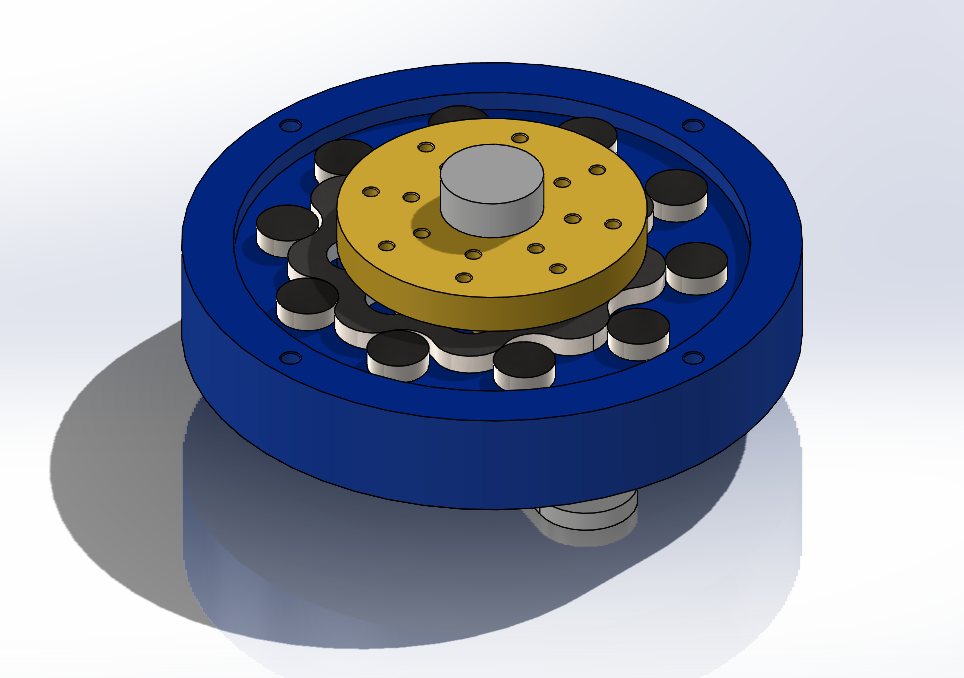
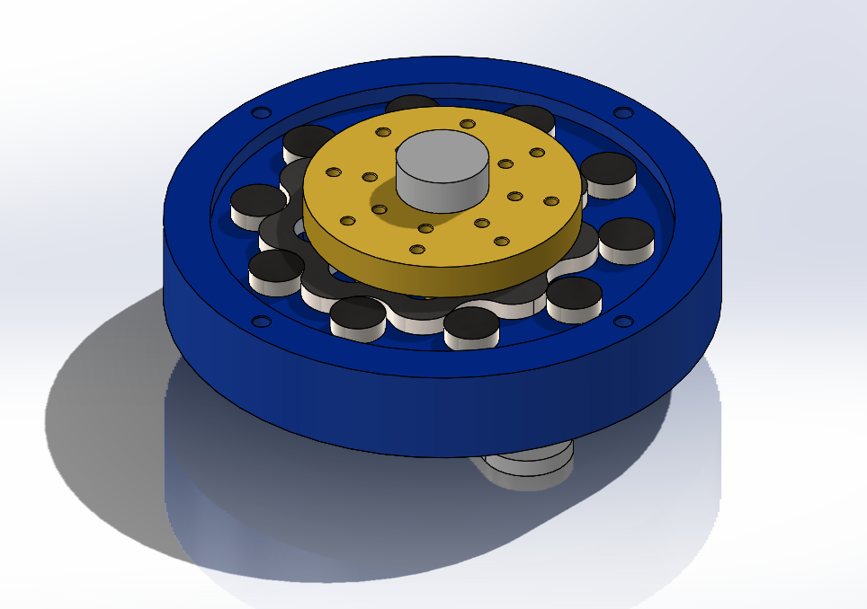

Mechanical Design Projects
Click any tile to open the full case study.
 Planetary Gearbox FEA
Planetary Gearbox FEA
 Reverse-Engineered Propeller
Reverse-Engineered Propeller
 Slotted Heat-Sink Fins
Slotted Heat-Sink Fins
 Pixie Manipulator
Pixie Manipulator
 Soft Robotics – PneuNets

Single-Stage Cycloidal Gear
Soft Robotics – PneuNets

Single-Stage Cycloidal Gear